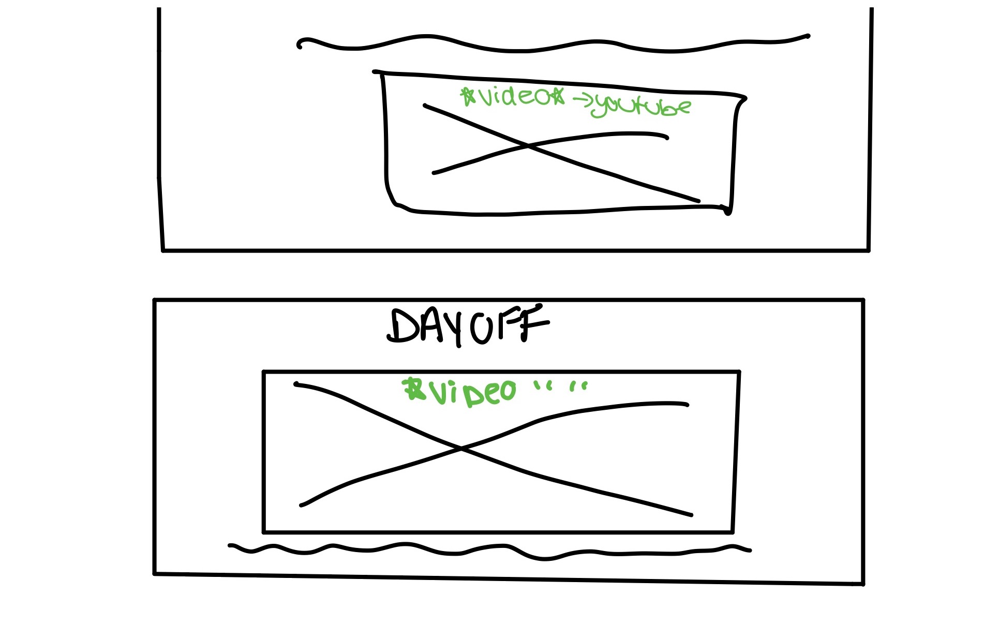
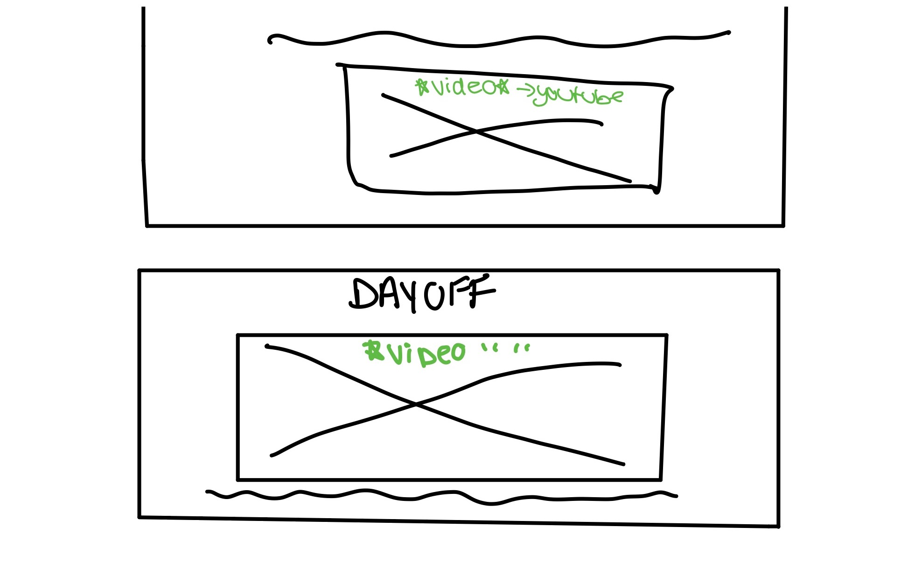

Home
For the Home page, I have decided to keep it short and sweet. The home screen has a photo of my face so users can see who is behind the website. It also has a brief biography so the readers can learn a bit about me.

This is my process page, This section of my website will showcase all the process and planning I have done in order to make the site the way that you see it.
For the Home page, I have decided to keep it short and sweet. The home screen has a photo of my face so users can see who is behind the website. It also has a brief biography so the readers can learn a bit about me.
For my highlights page I have incorporated some of the work I have done over the few years of my time at the University of Toronto. I made shire to center off the content in order to have a cohesive design that flows throughout the design.
 

For my resume page, I included a table to showcase all my previous work experience as I felt this would be an efficient way to show the information. I also added in cards to show my education. The cards will flip over and provide detail on what these schools have provided me with. My skills are organized in an unordered list as I felt there was no need to provide a long text section for them and it would be more clean to have them in a list.
In my contact page I have incorporated a form for users to add in their contact information and ability to send a message. I have also added in an embedded map of my approximate location so users can know where I am located. Lastly I also added in a LinkedIn hyperlink where users can click and then be sent to my LinkedIn profile.
For the design of my website I have ensured to make sure it is accesibly readable for viewers by creating contrasts between backgrounds and texts. I made sure the website was understandable and easy to operate for users.